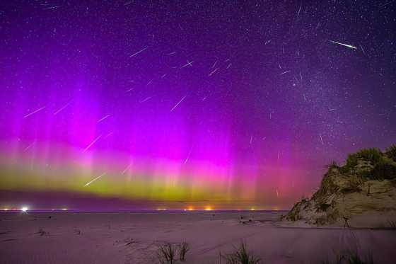
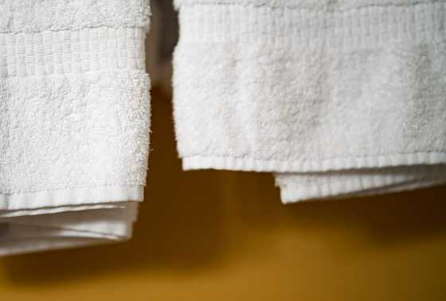
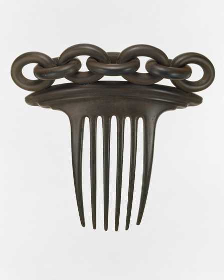
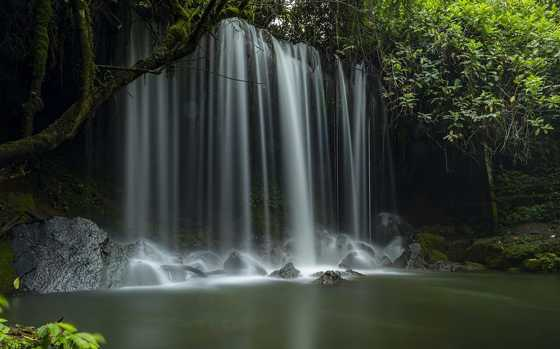
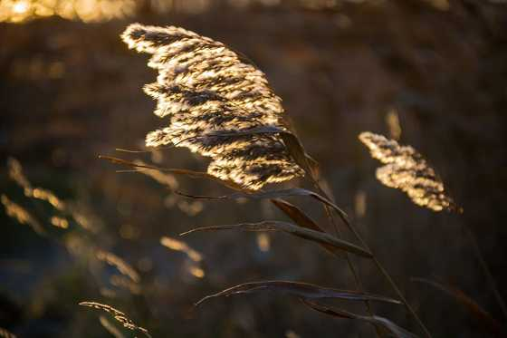
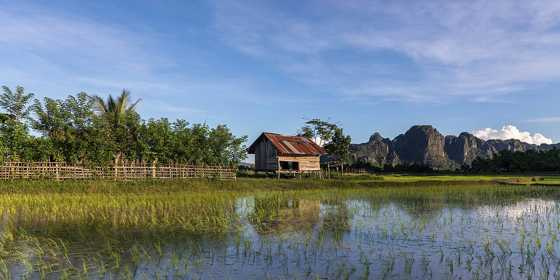
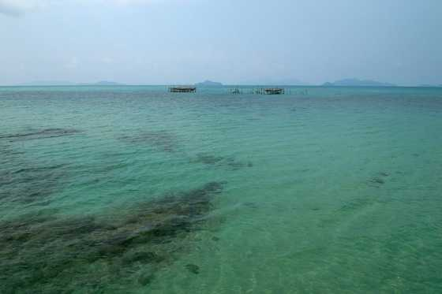

茨城県笠間市赤坂・髪質改善・縮毛矯正専門店
髪の悩みを手放して、
鏡を見る時間を好きになる。
Be-Serious(ビーシリアス)は、くせ毛や大人世代のエイジング毛の悩みに向き合う、髪質改善・縮毛矯正の専門店です。
お店の想い
髪と、まじめに向き合う。
掲載情報によると、Be-Seriousは髪質改善と縮毛矯正を専門に、くせ毛や年齢を重ねた髪の悩みに応えるサロンです。薬剤とアイロンの使い方に気を配り、髪質に合わせて施術すること、白髪染めから脱却するカラーや、艶のある仕上がりを大切にしていると紹介されています。
来店された方が髪の悩みを解消し、鏡を見る時間を前向きに楽しめるようにしたい。それがお店の想いとして紹介されています。
また、髪質改善「METEO」(メテオカラー・ネオメテオストレート)の取り扱いサロンとして、METEO公式サイトのサロン一覧にも掲載されています。
店名「Be-Serious」の由来は確認できていません。このページの夜空・光の写真は、「METEO」という言葉からの制作側のイメージです。




口コミ
ご来店の声(イメージ例)
イメージ例
くせが気になって毎朝のスタイリングが憂うつでしたが、鏡を見るのが少し楽しみになりました。
30代・女性(創作)イメージ例
髪の悩みを丁寧に聞いてもらえて、安心して任せられました。
40代・女性(創作)イメージ例
白髪染めを見直したくて相談しました。ツヤのある仕上がりが嬉しいです。
50代・女性(創作)上記は制作側が作成したイメージ例で、実在のお客様の声ではありません。
アクセス
笠間市赤坂で、お待ちしています。
- 住所
- 〒309-1616 茨城県笠間市赤坂32-1
- 営業時間
- 準備中
- 電話
- 準備中



掲載の写真はフリー素材のイメージ写真で、店舗の実際の様子ではありません。
写真クレジット
- night-light: Stephan Sprinz / CC BY 4.0
- stars: W.carter / CC BY-SA 4.0
- water-silk: Jameswasswa / CC BY-SA 4.0
- mint-leaf: Alex Abair / CC BY 4.0
- grass: Susanne Nilsson / CC BY-SA 2.0
- comb: Charles Goodyear / CC0
- cloud-light: Brocken Inaglory, retouched by Flamurai / CC BY-SA 3.0
- towel: Tony Webster / CC BY 2.0
- field-sky: Basile Morin / CC BY-SA 4.0
- bokeh: thr3 eyes / CC0
- teal-sea: Vyacheslav Argenberg / CC BY 4.0
- curtain: Steinar Engeland / CC0
出典・撮影地・加工(縮小)の詳細は制作メモに記録しています。